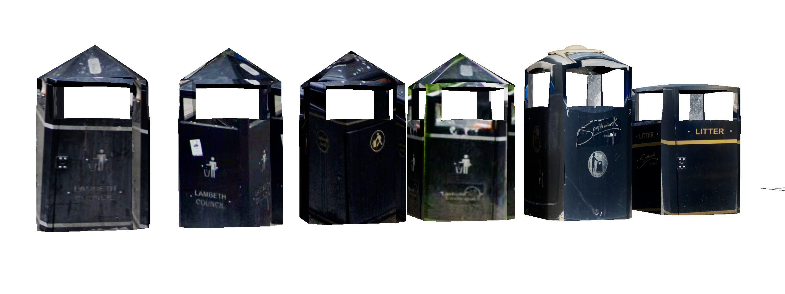
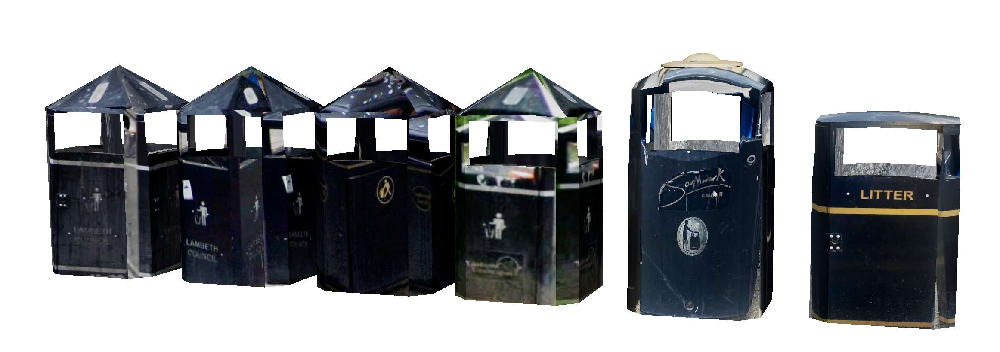
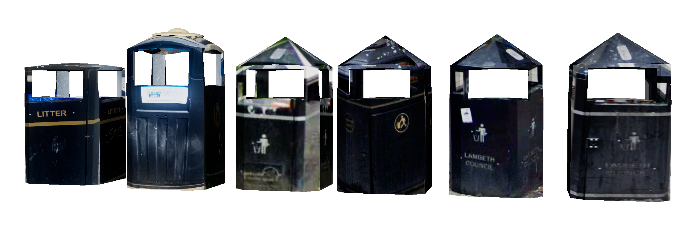
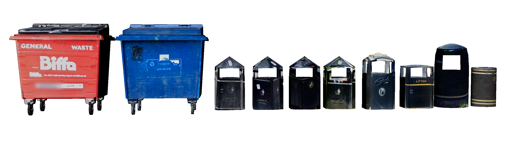
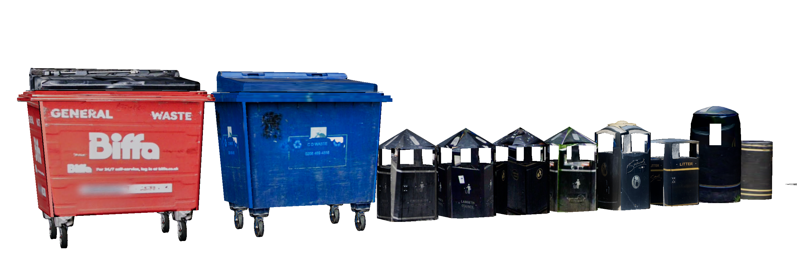
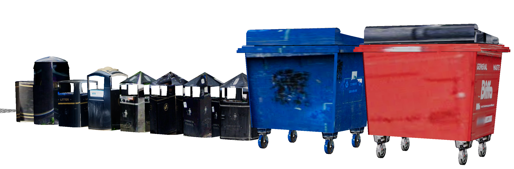

Role: Director, 3D Animator, 3D Modeller
VR Experience with live sound performance as part of my final Exhibition at University of the Arts London
The never-ending search for connection in a virtual London - Simulating my failed experiment of human connection through the use of VR and a modelled environment Graduate showcase created during my BA in Experimental Animation
Created using Maya, Unreal Engine, Adobe Premiere Pro + Photoshop
Using Cesium for Unreal as a world builder





